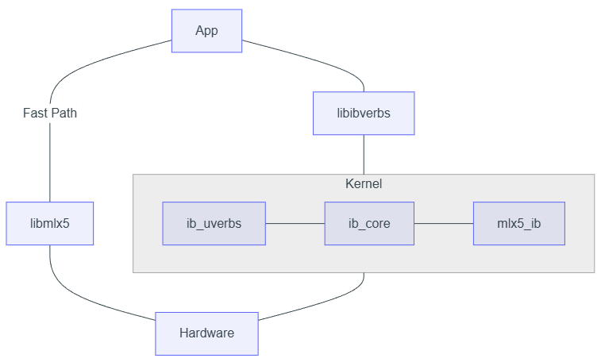

Linux 下 RDMA 驱动程序探索系列 -1
用户态驱动与内核态驱动的关系
RDMA 系统的驱动程序分为内核态和用户态两个大的组成部分。为什么要将一个设备的驱动程序分成两部分呢？这主要是为了从安全和性能两个角度取得一个平衡。
首先，从安全角度来说，RDMA 网卡作为一个硬件设备，允许其根据网络请求直接操纵本地主机的内存 ，这其实是一个相当危险的操作。不同于软件通过 CPU 访问内存时有 MMU 对内存访问进行权限控制，对于硬件设备而言，其 对本机内存的访问是直接在物理地址上进行最底层的读写访问（虽然一些现代处理器配备有 IOMMU 来为外设提供类似 MMU 的保护能力，但在高性能网络中为了提升性能，可能并不会开启）。
因此，RDMA 网卡在正式开始工作之前，必须对其进行一些设置，告知网卡哪些地址范围是可以访问的，哪些地址范围是不能访问的。此外，由于 RDMA 协议中传递的内存地址是虚拟地址，而硬件访问内存时需要的是物理地址，因此在使用网卡之前也需要对网卡配置一个类似于 CPU 上 MMU 所使用的页表一样的东西，用于帮助 RDMA 网卡自己实现 VA 到 PA 的转换，如果这个转换关系表填错了，则会导致本机内存被写乱的风险。
从上面的介绍可以看出，对于网卡一些重要配置操作，必须是安全可靠的，也就是不能让用户为所欲为的配置，要实现这一点，只能通过内核态的驱动程序来实现，即用户对网卡的重要配置操作，都需要通过执行系统调用来陷入内核，由内核确认操作合法后再交由硬件执行。
但是，RDMA 网络追求的是高性能和低延迟，这就意味着不可能所有的操作都需要陷入到操作系统内核去做，对于发送数据和接收数据这样最简单的操作，最好不要陷入内核态去给硬件发送指令，而是直接从用户态发起对硬件的操作。
除此之外，考虑到上层开发者使用的便利性，最好不要让上层开发者面对内核态驱动和用户态驱动两套 API 接口。大家经常开玩笑说没有什么问题是增加一个中间层解决不了的，所以 用户态驱动程序还有一个作用，就是将内核态启动的 API 接口进行一次封装，这样对于上层开发者而言，只需要对着用户态驱动框架所提供的 API 进行开发就好了。
驱动代码的目录结构
内核态驱动
RDMA 系统的内核驱动部分代码位于内核源码中的 drivers/infiniband 目录下，只需要正常克隆 Linux 内核的源码仓库即可获得到内核态驱动程序的源码。接下来以 v6.8 版本的内核源码为例，内核态源码的目录结构大致如下（为了展示方便，进行了一些删减）
1 | ├── core |
可以看到 RDMA 子系统的代码结构并不复杂，目录结构非常清晰。在这里我们重点需要关注的是 core、hw、sw 这三个目录，其中：
-
core 目录是 RDMA 子模块的核心逻辑，包含了对于各种特权级 Verbs 行为的处理、创建和 与用户态交互的设备文件接口 等工作，可以说这个 core 目录提供了一个 RDMA 设备驱动开发的抽象框架，该目录下的代码与具体的硬件设备无关。
-
hw 目录是与各个硬件厂商相关的硬件适配层代码，用于将 core 目录下 RDMA 子系统的抽象控制信息翻译给各家硬件特有的控制协议。从狭义的角度来说，这个目录下的代码才是真正的“硬件驱动程序”。在上面列出了 3 个硬件厂商对应的目录，其中：
-
mlx5 目录下是目前最知名的 Mellanox 系列网卡，其特点是驱动功能最完善，但是也最复杂，并不建议新手上来直接学习该目录下的代码。
-
hns 目录下是华为海思旗下网卡的驱动程序，其代码量适中，不过包含两个版本的硬件设备代码，混在一起对于阅读有一定的影响，同样不太建议新手直接阅读。
-
erdma 目录下是阿里巴巴自研弹性 RDMA 的驱动程序，由于该代码进入内核较晚，且该产品属于比较新的产品，因此没有太多的历史包袱，代码量也很小，只支持 RDMA 中部分常用的功能，因此是一个非常适合入门者学习的代码。
-
-
sw 目录是 软件模拟的 RDMA 协议栈，在没有真实的 RDMA 设备时，可以使用该目录下的驱动程序将普通网卡模拟成一块 RDMA 网卡进行使用，当然其性能无法与真实硬件相媲美，通常仅用于在没有真实 RDMA 网卡情况下的调试、测试等用途。另外，由于软件模拟 RDMA 网卡的过程中涉及到对 RDMA 数据包的生成与解析操作，因此，如果对 RDMA 协议本身感兴趣的同学，可以阅读 rxe 设备的代码来了解有关 RDMA 协议本身实现的细节。
用户态驱动
用户态驱动程序并没有放在 Linux Kernel 的代码库中，而是在如下的独立 Github 仓库中进行托管：https://github.com/linux-rdma/rdma-core
需要注意，这个项目的名字虽然叫做 rdma-core，但它和上面内核源码树中的 core 文件夹没有任何关系，rdma-core 项目中的所有代码编译后都是在用户态执行的，这一点大家务必区分清楚。
克隆该项目后，可以看到如下的目录结构同样为了便于展示，删减了大部分初学者不需要关注的目录：
1 | ├── build |
-
build 目录里包含了用于构建用户态驱动的构建系统。
-
kernel-headers 中包含了与内核代码相关的必要头文件。由于用户态驱动程序依赖内核态驱动程序来提供对设备特权级操作的支持，因此必不可少要和内核打交道。由于 Linux Kernel 的代码迭代速度很快，用户态与内核态的接口在不同版本之间也会有细微变化。该目录下的文件会在 Linux Kernel 发布新版本时进行对应的更新，从而保证用户态驱动可以与对应的内核版本进行正常的交互。
-
libibverbs 目录里提供了所有对上层用户暴露的 Verbs API 接口，与内核态驱动类似，该目录下的代码对 RDMA 设备进行了一个抽象封装，提供了 RDMA 设备通用功能的抽象，与具体的设备没有关系。
-
providers 目录下则包含了与具体设备相对应的代码，也就是狭义上的“用户态驱动程序”，这里的代码通常会通过 MMIO 的方式在用户态直接操作网卡硬件上的 CSR 寄存器，或者读写 Main Memory 中与硬件网卡设备共享的环形缓冲区。
-
pyverbs 目录下则提供了一套 Python 版本的 Verbs API 接口，rdma-core 这个软件项目的主体部分编译后会得到一个动态链接库，这样的动态链接库更适合于 C、Rust 这样的系统级编程语言来使用。不过这些语言虽然运行的快，但开发难度还是相对较高的，为了方便大家调试开发，或者做一些简单的实验，pyverbs 为大家提供了一套 Python API 接口，从而使得开发一些简单的应用变得很方便，也非常适合初学者。
Linux 下 RDMA 驱动程序探索系列 -2
本篇文章作为系列的第二篇，将深入内核态驱动程序的代码，主要介绍如下内容：
-
Driver 的初始化流程
-
几个重要 verbs 回调函数的简介
Kernel Driver 的初始化流程
由于不同厂商的驱动程序千差万别，在此不以具体厂商的驱动程序进行介绍，而是以 Kernel 中核心的 API 调用为锚点进行介绍。读者在阅读完本篇文章后，可以在自己感兴趣的厂商驱动代码中搜索这些 API，从而快速梳理出这些驱动程序的框架。
驱动的加载与激活
作为一个 Linux Kernel Driver，其入口点的位置和普通的 Driver 程序一样，都是通过 module_init 来指定一个函数作为入口点。
由于基本上所有 RDMA 网卡都是 PCIe 设备，因此在驱动程序入口执行后，首先要做的是初始化 PCIe 设备相关的操作，典型的就是调用 pci_register_driver 向 Kernel 注册自己所感兴趣的 PCIe 设备，提供 probe 回调函数，这样 kernel 在匹配到驱动所对应的硬件后，就会调用 probe 函数。所以，从某种角度上来说，PCIe 设备的 probe 回调函数才是绝大多数 RDMA 驱动的主入口，因为如果没有硬件插入主板的话，驱动可以处于静默状态，只有检测到 PCIe 硬件以后，整个驱动才开始活跃起来。（当然，上述流程是针对 RDMA 硬件设备的驱动而言的，对于一些例外情况，例如 Linux 在 drivers/infiniband/sw 目录中提供的 rxe 驱动等，是通过软件来模拟硬件行为的，不涉及到真实的硬件，则初始化流程必然会有所差异）。
RDMA 设备注册
驱动程序的核心部分被激活以后，接下来的操作就主要是在 Kernel 的 RDMA 框架下进行工作了。该框架提供了一系列以 ib_ 开头的系统调用，在接下的文章中将介绍为了让操作系统可以识别到一个 RDMA 设备所需要的最少的 ib_API 调用。
首先，我们需要调用内核的 ib_alloc_device 来申请一个用来描述 RDMA 设备的结构体，一个例子如下：
1 | struct dtld_dev { |
不出意外的，上述代码中使用了 Kernel 中经典的通过结构体嵌套和 container_of 来实现类似“面向对象”风格编程的写法。其中 dtld_dev 结构体是用来表述一块 RDMA 网卡的顶层结构，其中必须放入一个 ib_device 类型的成员，从而使得该结构体可以被 Kernel 的 RDMA 框架所识别。这个结构体定义好之后，就可以调用 ib_alloc_device 来申请一块 Kernel 中的内存用于存放这个设备的描述符了。
1 | // https://elixir.bootlin.com/linux/v6.6.87/source/include/rdma/ib_verbs.h#L2859 |
拿到设备描述符以后，接下来要调用的是 ib_set_device_ops，这个 API 需要传入一个 ib_device_ops 类型的结构体，该结构体中定义了 RDMA 设备可以支持的各种回调函数，一个简单的例子如下所示：
1 | static const struct ib_device_ops dtld_dev_ops = { |
可以看到这个结构体的前三个字段定义了 一些元信息 ，此后的数十个字段都是 Kernel 中 RDMA 框架所支持的 各种回调函数的挂载点。上述列出的是一些必要的回调函数，有了这些回调函数的支持，上层应用便可以通过 API 函数查询到一个可用的 RDMA 设备了（虽然这个设备现在还只是一个空壳子）。具体这些回调函数的作用，将在下一小节中进行介绍。
上述两个 API 的调用都是正式将 RDMA 设备注册给操作系统之前的准备工作。打个比方，就像去一些单位线下办理业务，在正式办理之前需要填好各种申请表格，上面第一个 API 的作用类似于找人要一张申请表（分配一块内存给设备描述符），第二个 API 的作用相当于把申请表填好（准备好各种回调函数），接下来的这个 API 是真正办理业务的 API 了（向操作系统正式注册这个 RDMA 设备）：ib_register_device。
在调用 ib_register_device 以后，如果上层用户态驱动安装正常，则可以通过 rdma link show 命令行指令观察到一块可以使用 RDMA 网卡出现在列表中，说明操作系统已经接受了上面的注册申请。
几个重要 verbs 回调函数的简介
在上面第二步填写申请表的操作中（struct ib_device_ops），最重要的就是那些回调函数了，很多用户态的管理类 API 操作，都会最终调用到这些回调函数上来。接下来我们来看几个重要的回调函数，这些回调函数支撑了用户态的 rdma link show 命令行指令。
query_device 回调
该回调的主要作用是返回设备的必要信息，原型如下：
1 | static int dtld_query_device( |
从原型声明中可以看到，核心是要通过 *attr 将设备的各种属性信息返回给 Kernel 的 RDMA 框架。这个 ib_device_attr 类型的结构体是一个拥有 40 多个字段的结构体，其中主要包含了设备所支持的各种极限参数，例如最大的 QP 数量、最大的 MR 数量、最大的 PD 数量等等。
query_port 回调
这个回调的作用是返回端口的必要信息，原型如下：
1 | static int dtld_query_port( |
从名字就可以看出，这个回调的作用和 query_device 回调是很类似的，只不过这个要返回端口的属性，而不是设备的属性。其中的 ib_port_attr 结构体主要包含了端口的速率信息、链路是否通常、MTU 配置等，对于一个空壳驱动程序而言，可以通过直接返回如下的属性来让上层应用看到一个可用的接口：
1 | attr->state = IB_PORT_ACTIVE; |
dtld_get_link_layer 回调
该函数主要用于返回链路层的类型，例如对于一个 RoCE 设备，则该回调需要返回 IB_LINK_LAYER_ETHERNET。
alloc_ucontext 回调
这个回调函数会在上层应用打开设备（ibv_open_device）时被调用，可以在这里完成一些对设备使用前的一些初始化工作，例如将下发 WQE 的环形缓冲区地址映射到用户态等操作，都可以在这个回调中完成。
提到内存地址的映射，由于 RDMA 的使用过程中需要很多用户态跳过内核直接操作硬件的操作，因此将硬件上的 CSR 或 Buffer 映射到用户态是一个常见的操作。RDMA 框架也为此提供了一套映射机制。关于这套映射机制的介绍，我们将在后面单独列出一篇文章进行介绍。对于前文中提到的 mmap 回调函数的使用，我们也将放到这篇文章中一同进行介绍，敬请期待。【注：暂时没发现这篇文章】
虚拟 RDMA 设备驱动实现（一）：环境配置与 Linux 内核模块初探
Linux 中的 RDMA 支持：内核子系统与 rdma-core
Linux 内核提供了对 RDMA 技术的强大且成熟的支持，主要通过其 RDMA 子系统实现。这个子系统是内核的一部分，为各种 RDMA 硬件（如 InfiniBand HCAs, RoCE NICs, iWARP NICs）提供了一个统一的、硬件无关的编程接口。
Linux RDMA 架构主要包含：
内核 RDMA 子系统：
-
核心模块 (ib_core)： 提供核心的数据结构、API 实现和设备管理框架。
-
硬件驱动 (Hardware Drivers)： 针对特定 HCA 硬件的驱动程序（例如 mlx5_core for Mellanox, i40iw for Intel iWARP）。这些驱动实现了 Verbs API 中与硬件相关的部分，并向核心层注册其设备。<- RDMA 内核态驱动开发就是开发的这里
-
用户空间接口 (ib_uverbs)： 提供了一个字符设备接口（通常是 /dev/infiniband/uverbsX），允许用户空间应用程序或者 rdma-core 库通过 ioctl 调用来访问内核 RDMA 资源和执行操作。
-
连接管理模块 (e.g., ib_cm, rdma_cm)： 帮助建立和管理 RDMA 连接。
rdma-core 用户空间包：这是一个重要的用户空间软件包，提供了与内核 RDMA 子系统交互所需的库和工具。
-
libibverbs：最核心的用户空间库，它封装了通过 uverbs 接口与内核驱动通信的细节，为应用程序提供了标准的 Verbs API。
-
Provider 库 (e.g., libmlx5.so, librxe.so)：这些是 libibverbs 根据检测到的硬件动态加载的库，它们包含了针对特定硬件或软件 provider 的特定逻辑，用于将通用的 libibverbs 调用转换为特定于该 provider 的 uverbs 命令。<- RDMA 用户态驱动开发就是开发的这里
-
librdmacm：一个用户空间库，用于简化 RDMA 连接的建立和管理。
-
实用工具：如 ibv_devices (列出所有可用的 RDMA 设备), ibv_devinfo (显示设备属性) 等。应用程序通常链接 libibverbs 和 librdmacm，通过这些库间接与内核中的 RDMA 驱动进行交互。
本系列目标：从零开始编写一个最简单的 RDMA 内核驱动
本系列的目标是带领读者踏上一段实践之旅：从零开始编写一个基础的、功能极简的 RDMA 内核驱动程序，并将其成功接入到用户空间的 rdma-core 生态系统中。这意味着，当我们的驱动加载后，用户空间工具（如 ibv_devices）应该能够识别出我们“虚拟”的 RDMA 设备，并且我们能够通过 libibverbs 尝试与这个设备进行最基本的交互。
在 libibverbs 的基础上，我们甚至可以通过操作系统提供的接口，在用户态实现 RDMA 的主要驱动功能。
我们将不会涉及实际的硬件控制，而是专注于：
-
理解 Linux 内核模块开发的基础。
-
学习 Linux RDMA 子系统的核心架构和关键数据结构。
-
掌握如何实现一个最小化的 ib_device，让内核 RDMA 子系统能够识别我们的驱动。
-
了解如何暴露必要的 uverbs 接口，以便 rdma-core 中的 libibverbs 能够与我们的驱动通信。
通过这个循序渐进的过程，希望读者能学习到 RDMA 驱动开发的基本流程，也能深入理解 Linux 内核与用户空间 RDMA 组件是如何协同工作的。这对于希望深入研究 RDMA、调试现有 RDMA 问题，或者为新型 RDMA 硬件 / 协议开发驱动的工程师来说，将是一个宝贵的起点。
虚拟 RDMA 设备驱动实现（二）：从零构建一个内核可识别的 RDMA 设备
引言
本文将在此基础上进行延伸，将焦点从通用的内核模块开发，正式转向特定领域的驱动实现——即与 Linux RDMA 子系统的集成。我们将深入剖析该子系统的核心架构，重点分析其设备模型（struct ib_device）以及驱动必须履行的接口契约（struct ib_device_ops）。这些是任何 RDMA 硬件驱动与内核 ib_core 框架进行交互的基石。
本文的核心目标，是将上述理论知识付诸实践，编写一个名为 urdma 的最小化虚拟 RDMA 驱动（真正的 RDMA 硬件驱动，如 mlx5_ib，涉及大量寄存器操作、固件交互和 DMA 映射，初学者极易迷失在细节中）。我们将通过内核自身的接口（如 sysfs 文件系统和 rdma link show 工具）来验证我们的设备是否已成功注册。
Linux RDMA 子系统核心概念
在之前的文章中，我们学习了 Linux 内核模块的基础知识。现在，我们将深入探讨 RDMA 的部分，特别是 Linux 内核中 RDMA 子系统（也常被称为 InfiniBand 子系统或 Verbs 子系统）的核心概念和架构。这个子系统为各种 RDMA 硬件（如 InfiniBand HCA、支持 RoCE 或 iWARP 的网卡）提供了一个统一的编程接口。
RDMA 硬件抽象：HCA (Host Channel Adapter)
在 RDMA 的语境中，执行 RDMA 操作的网络接口卡通常被称为 HCA (Host Channel Adapter)。可以将其视为一种智能网卡，它能够直接处理 RDMA 协议，执行内存注册、数据传输调度、完成通知等任务，从而减轻 CPU 的负担。
不同的 RDMA 技术使用不同类型的 HCA：
-
InfiniBand HCAs: 用于原生的 InfiniBand 网络。
-
RNICs (RDMA NICs): 用于在以太网上运行 RDMA 协议，主要包括：
- RoCE (RDMA over Converged Ethernet) NICs: 在以太网链路层或 IP 层之上运行 RDMA。
- iWARP (Internet Wide Area RDMA Protocol) NICs: 在 TCP/IP 之上运行 RDMA。
Linux RDMA 子系统的目标之一就是为这些不同类型的 HCA 提供一个统一的驱动模型和用户接口。在内核中，每个物理 HCA 设备通常由一个 struct ib_device 结构体来表示。
Verbs API：RDMA 操作的基石
Verbs API 是 RDMA 编程的核心。它是一组定义了如何与 RDMA 硬件交互的函数和数据结构（Verbs 指的是操作，如 post send, poll cq 等）。应用程序（无论是用户态还是内核态）通过 Verbs API 来分配和管理 RDMA 资源，并发起 RDMA 操作。
Verbs API 的设计是硬件无关的，这意味着理论上，使用 Verbs 编写的应用程序可以不经修改或少量修改就在支持 RDMA 的不同硬件上运行。
以下是 Verbs API 中一些最核心的资源对象：
保护域 (Protection Domain - PD)
概念：保护域 (内核中的 struct ib_pd) 是一个资源隔离的容器。所有其他的 RDMA 资源，如内存区域 (MR)、完成队列 (CQ)、队列对 (QP) 等，都必须与一个 PD 相关联。
目的：PD 提供了一种安全机制，确保一个应用程序或进程创建的 RDMA 资源不能被其他没有权限的应用程序或进程非法访问。只有与同一 PD 关联的资源才能相互交互（例如，一个 QP 只能访问与该 QP 相同 PD 下的 MR）。
操作：
- ib_alloc_pd(): 分配一个 PD。
- ib_dealloc_pd(): 释放一个 PD。
内存区域 (Memory Region - MR)
概念：内存区域 (内核中的 struct ib_mr) 代表一块被注册用于 RDMA 操作的内存缓冲区。由于 HCA 需要直接访问这块内存（绕过 CPU 和操作系统内存管理），这块内存必须被固定 (pin) 在物理内存中，以防止被交换到磁盘，并且其物理地址必须对 HCA 可见。
目的：MR 将应用程序的虚拟地址空间中的内存块映射给 HCA，并授予 HCA 对这块内存的读 / 写访问权限。MR 还包含访问权限（本地写、远程读、远程写、原子操作等）。
关键属性：
- lkey (local key): 用于本地 HCA 访问该 MR。
- rkey (remote key): 用于远程 HCA 访问该 MR (建立连接后将 rkey 告知对方)。
操作：
- ib_get_dma_mr(): 为 DMA 映射的内存创建一个 MR。
- ib_reg_user_mr(): 为用户空间的虚拟地址范围注册一个 MR。
- ib_dereg_mr(): 注销一个 MR。
完成队列 (Completion Queue - CQ)
概念：完成队列 (内核中的 struct ib_cq) 用于接收 RDMA 操作完成的通知。当一个发送或接收操作（或其他 RDMA 操作）完成时，HCA 会在该操作关联的 CQ 中放置一个完成队列项 (Completion Queue Entry - CQE)。
目的：应用程序通过轮询 CQ 或等待 CQ 事件来了解哪些操作已经完成，以及操作的结果（成功或失败，传输的字节数等）。
操作：
- ib_create_cq(): 创建一个 CQ。
- ib_destroy_cq(): 销毁一个 CQ。
- ib_poll_cq(): 轮询 CQ 以获取已完成的 CQE。
- ib_req_notify_cq(): 请求在 CQ 上有新的 CQE 到达时产生一个中断或事件。
Queue Pair - QP
概念：Queue Pair (内核中的 struct ib_qp) 是 RDMA 通信的核心引擎。顾名思义，它包含一对工作队列：
- 发送队列 (Send Queue - SQ): 用于提交发送请求（如 Send, Read, Write, Atomic 操作）。
- 接收队列 (Receive Queue - RQ): 用于提交接收请求（用于接收对方 Send 操作发送过来的数据）。
目的：QP 负责实际的数据传输。应用程序将工作请求 (Work Request - WR) 提交到 QP 的发送队列或接收队列，HCA 会处理这些请求。
QP 类型：
- RC (Reliable Connected): 可靠连接。提供有序、可靠的数据传输，类似于 TCP。需要建立连接。
- UC (Unreliable Connected): 不可靠连接。提供有序但不可靠的数据传输（可能丢包），需要建立连接。
- UD (Unreliable Datagram): 不可靠数据报。提供无序、不可靠的数据传输，类似于 UDP。无需建立连接，但需要使用地址句柄 (AH)。
QP 状态： QP 有一个状态机，在能够进行数据传输之前，需要从初始状态转换到一系列中间状态，最终达到可以发送 / 接收数据的状态（如 RTS - Ready To Send）。
操作：
- ib_create_qp(): 创建一个 QP。
- ib_modify_qp(): 修改 QP 的状态或属性。
- ib_destroy_qp(): 销毁一个 QP。
- ib_post_send(): 向 QP 的发送队列提交一个发送工作请求。
- ib_post_recv(): 向 QP 的接收队列提交一个接收工作请求。
这些是 Verbs API 中最基础和最常用的对象。一个典型的 RDMA 应用流程要创建和配置这些对象后才能开始数据传输。
内核 RDMA 架构概览
Linux 内核中的 RDMA 子系统是一个分层架构，旨在将硬件细节与上层应用和协议分离开来。
1 | +--------------------------------------+ |
各主要组件说明：
-
User Space Applications: 使用 RDMA 的用户态程序。
-
rdma-core: 用户态库，为应用程序提供标准的 Verbs API 和连接管理 API。libibverbs 是核心，它通过 uverbs 接口与内核通信。
-
Connection Manager (CM): 内核中的模块，帮助建立、维护和释放 RDMA 连接（尤其是 RC 和 UC QP）。例如 ib_cm 用于 InfiniBand，rdma_cm 是一个更通用的 CM，可以处理 InfiniBand 和 RoCE。
-
ib_uverbs (User Verbs): 这是内核 RDMA 子系统暴露给用户空间的关键接口。它通常实现为一个字符设备 （如 /dev/infiniband/uverbs0, /dev/infiniband/uverbs1 等，每个 RDMA 设备对应一个）。 用户空间的 libibverbs 通过对此设备文件执行 ioctl 系统调用来请求内核分配 RDMA 资源、提交工作请求等。ib_uverbs 会将这些请求转换为对 ib_core 或具体硬件驱动的调用。
-
ib_core: 这是内核当中 RDMA 子系统的核心。它定义了核心的数据结构（如 struct ib_device, struct ib_qp 等）、Verbs API 的内核态实现框架、设备注册和管理机制等。硬件驱动则会向 ib_core 注册自己的实现。
-
Hardware Driver Layer: 这一层包含了特定 RDMA 硬件的驱动程序（例如 Mellanox 的 mlx5_core，Intel 的 i40iw，Chelsio 的 cxgb4，以及软件实现的 rxe - SoftRoCE）。这些驱动程序实现了 ib_core 定义的硬件操作函数（通过函数指针表），并负责与物理硬件交互。本文的目标就是编写这样一个（尽管是虚拟的）驱动程序。
-
RDMA Hardware (HCAs): 物理的 RDMA 网卡。
关键内核数据结构简介
在编写 RDMA 内核驱动时，我们会频繁接触到 ib_core 定义的一些关键数据结构：
struct ib_device (RDMA 设备描述)
定义于 <rdma/ib_verbs.h>。
这是 RDMA 子系统用来代表一个具体 RDMA 设备（HCA 或虚拟 RDMA 功能单元）的 核心结构。每个希望被 RDMA 子系统管理的设备都必须有一个对应的 struct ib_device 实例。
驱动程序负责分配（通常使用 ib_alloc_device()）、初始化并填充这个结构，然后通过 ib_register_device() 将其注册到 ib_core。
关键成员：
-
name[IB_DEVICE_NAME_MAX]: 设备的唯一名称 (例如 “mlx5_0”, “urdma0”)。
-
ops: 一个内嵌的 struct ib_device_ops 结构体。这是实现所有 Verbs 功能的核心，驱动程序通过定义一个 static const struct ib_device_ops 实例，并使用 ib_set_device_ops() 将其内容复制到 ib_device->ops 中。
-
dev: 一个内嵌的 struct device，通过 ib_alloc_device() 进行初始化。
-
node_type: 节点类型 (e.g., RDMA_NODE_IB_CA, RDMA_NODE_RNIC)。
-
phys_port_cnt: 设备拥有的物理端口数量。
-
port_data: 指向一个 struct ib_port_data 数组，每个元素对应一个物理端口的数据。
-
attrs: 一个内嵌的 struct ib_device_attr 结构，用于缓存设备属性。
struct ib_device_ops (设备操作函数表)
定义于 <rdma/ib_verbs.h>。
这个结构体包含了一系列函数指针，每个指针对应一个 Verbs API 操作或设备管理功能。驱动程序必须提供这个结构的一个实例，并实现其中的相关函数。
关键成员：
-
owner: 类型为 struct module *，驱动程序应将其设置为 THIS_MODULE。
-
driver_id: 类型为 enum rdma_driver_id，标识驱动的类型。
-
uverbs_abi_ver: 指定驱动支持的用户 Verbs ABI 版本。
-
query_device, query_port: 查询设备整体或特定端口的属性。
-
alloc_pd, dealloc_pd: 分配和释放保护域。
-
create_qp, modify_qp, destroy_qp: 队列对操作。
-
post_send, post_recv: 工作请求提交。
-
create_cq, destroy_cq, poll_cq: 完成队列操作。
-
get_dma_mr, reg_user_mr, dereg_mr: 内存区域操作。
-
get_port_immutable: 获取端口的不可变属性。
-
alloc_ucontext, dealloc_ucontext: 分配和释放用户上下文。
-
对象大小成员: 结构体末尾有一系列通过 DECLARE_RDMA_OBJ_SIZE 宏声明的成员，这些 size_t 类型的成员用于 告知 ib_core 驱动程序为相应 RDMA 对象（如 AH, CQ, PD 等）定义的包装结构体的大小。驱动程序在初始化其 ib_device_ops 实例时，会使用 INIT_RDMA_OBJ_SIZE(ib_pd, struct urdma_pd, ibpd) 宏来填充这些字段。这使得 ib_core 在分配这些对象（例如，当用户空间请求创建一个 PD 时）时，能够分配足够的内存以容纳驱动的私有数据。
以及其他众多 Verbs 操作对应的函数指针。
驱动如何与 ib_core 交互
一个典型的 RDMA 驱动与 ib_core 的基本交互流程如下：
模块加载时：
-
驱动程序（例如在其模块初始化函数中，或 PCI 驱动的 probe 函数中）决定创建一个 RDMA 功能单元。
-
调用 ib_alloc_device 来分配一个包含 struct ib_device 的自定义设备结构体。
-
驱动程序填充 struct ib_device 的各种属性（如 node_type, phys_port_cnt 等）。
-
驱动程序定义一个 static const struct ib_device_ops my_ops = {.owner = THIS_MODULE, .uverbs_abi_ver = X, / …其他函数指针和大小字段… /};。
-
调用 ib_set_device_ops 将 my_ops 的内容复制到 dev->ops 中。
-
调用 ib_register_device 将初始化好的 ib_device 注册到 ib_core。
运行时：
- 当用户空间应用程序通过 libibverbs 请求 RDMA 操作时，ib_core 或 ib_uverbs 会查找对应的 ib_device，并调用其 ops 结构中相应的函数指针，从而执行到驱动程序实现的代码。
模块卸载时：
-
驱动程序需要调用 ib_unregister_device 来从 ib_core 注销设备。
-
之后，驱动程序应调用 ib_dealloc_device 来释放之前通过 ib_alloc_device() 分配的内存。
理解这些核心概念和数据结构，是编写 RDMA 内核驱动程序的第一步。在下一章中，我们将开始动手，尝试编写一个最简单的 RDMA 内核驱动，它能够注册一个虚拟的 ib_device 并被 Linux 内核的 RDMA 子系统所识别。
编写一个最小化的 RDMA 内核驱动
在理解了 Linux 内核模块和 RDMA 子系统的核心概念之后，我们终于可以开始动手编写一个 RDMA 内核驱动了。本章的目标是创建一个“最小可行产品” (Minimum Viable Product, MVP)：一个能够成功加载到内核，注册一个（或多个）虚拟 RDMA 设备的驱动程序。
我们将 构建一个名为 urdma 的驱动程序，它代表一个用户空间可访问的虚拟 RDMA 设备。这个驱动将为我们后续探索更复杂的 RDMA 功能提供一个基础框架。
我们将关注以下关键步骤：
- 定义驱动的核心数据结构。
- 实现模块的初始化和退出函数。
- 实现 ib_device_ops 中的必要回调函数（即使是空实现或最小实现）。
- 分配、初始化并注册 ib_device 实例。
目标：让内核 RDMA 子系统识别我们的虚拟设备
对于这个最小化的 urdma 驱动，我们的首要目标不是实现完整的数据传输功能，而是将它成功加载到内核，正确地创建并注册 struct ib_device 实例，从而让这个虚拟的 RDMA 设备能够被 Linux 内核的 RDMA 子系统本身所识别和管理。
具体来说，这意味着当我们的 urdma.ko 模块加载后，我们期望达到以下内核层面的验证点：
-
内核提供的 RDMA 工具 rdma link show 应该能够枚举出我们注册的虚拟 RDMA 设备及其端口。
-
注册成功后，这些虚拟设备应该在 sysfs 文件系统中的 /sys/class/infiniband/ 目录下创建对应的条目（例如 urdma0, urdma1）。
驱动核心数据结构 (urdma.h)
首先，我们定义驱动所需的核心数据结构。这些结构将保存在一个头文件 urdma.h 中，以便在驱动的各个部分共享。
1 | // urdma.h |
关键点说明：
-
struct urdma_dev: 这是驱动的核心结构，代表一个虚拟 RDMA 设备。它通过内嵌 struct ib_device 来与内核 RDMA 子系统集成，同时允许添加驱动特有的数据（如 id 和 gid）。
-
to_udev(): 这是一个实用宏，用于从 ib_core 传递过来的 struct ib_device 指针安全地转换回我们自定义的 struct urdma_dev 指针。
-
struct urdma_pd, struct urdma_cq, struct urdma_qp, struct urdma_ucontext: 这些是对应标准 Verbs 对象的包装结构。这种模式为将来扩展驱动功能（例如，为每个对象存储额外的私有数据）提供了便利，同时保持了与 ib_core 的兼容性。
模块初始化与退出 (urdma_main.c)
驱动的主逻辑，包括模块的加载和卸载，将放在一个名为 urdma_main.c 的文件中。
1 | // urdma_main.c |
初始化流程 (urdma_init_module)：
一. 创建设备：
urdma_alloc_device(i): 调用 ib_alloc_device(urdma_dev, ibdev) 来分配一个 urdma_dev 结构体。ib_alloc_device 是 ib_core 提供的标准函数，它会为包含 ib_device 的自定义结构分配内存并进行基础初始化。我们为设备的 GID (Global Identifier) 成员赋予了固定的值，这个值是从 rxe 设备获取到的示例值。
urdma_register_device(urdma_devs[i]): 此函数（稍后定义）将负责填充 urdma_devs[i]->ibdev 的其余字段，并调用 ib_register_device() 将其注册到 ib_core。
二. 错误处理 (err_cleanup):
如果在初始化过程中发生错误，此标签下的代码负责回滚操作，即注销并释放所有已经成功创建的设备。
退出流程 (urdma_exit_module)：
一. 循环清理设备：
ib_unregister_device(&urdma_devs[i]->ibdev): 从 ib_core 注销设备。
urdma_dealloc_device(urdma_devs[i]): 调用 ib_dealloc_device() 释放设备结构占用的内存。
定义和实现 ib_device_ops
struct ib_device_ops 是一个包含大量函数指针的结构体，它定义了驱动程序如何响应来自 ib_core 的各种 Verbs 操作请求。对于我们的最小化驱动，许多这些函数可以只是存根 (stub) 实现。
1 | // urdma_main.c |
关键点说明：
-
owner: THIS_MODULE: 确保内核正确管理模块的引用计数。
-
uverbs_abi_ver: 指定驱动 ABI 版本。
-
Mandatory Ops: query_device, query_port, query_gid, get_port_immutable 是让 ibv_devinfo 等工具能够查询设备信息的基础。PD, QP, CQ, MR 的相关操作也是强制要求实现的。
-
INIT_RDMA_OBJ_SIZE Macros: 如 INIT_RDMA_OBJ_SIZE(ib_pd, urdma_pd, ibpd)，这些宏告知 ib_core 如何为该驱动分配和管理自定义的 Verbs 对象（如 urdma_pd），确保内存大小和成员偏移正确，如果不进行大小的设置或者设置了错误的大小，很有可能会导致系统崩溃。
-
alloc_ucontext / dealloc_ucontext: 这两个函数对于用户空间通过 ibv_open_device() 和 ibv_close_device() 使用设备至关重要。
-
Stub Implementations: 对于许多其他的 Verbs 操作（如 create_qp, post_send 等），在最小化驱动中，它们可以简单地返回成功 (0)、不支持操作 (-EOPNOTSUPP 或 -ENOSYS)，或者仅打印一条调试信息。
-
MR (Memory Region) Ops: get_dma_mr 和 reg_user_mr 至少需要分配一个 struct ib_mr（或其包装结构）并返回，返回空指针会导致错误。dereg_mr 则负责释放。
注册 struct ib_device
urdma_register_device 函数负责在 ib_alloc_device 之后，进一步初始化 ib_device 结构并最终调用 ib_register_device() 将其注册到内核 RDMA 子系统。
1 | // urdma_main.c |
关键填充字段：
-
dev->node_desc: 设备的描述性字符串。
-
dev->node_type: 标识设备类型，对于 RoCEv2 实现的网卡 HCA 为 RDMA_NODE_IB_CA。
-
dev->phys_port_cnt: 物理端口数量。
-
ib_set_device_ops(dev, &urdma_device_ops): 至关重要，将实现的 ops 函数表关联到此 ib_device。
编译、加载模块并验证
完成上述代码后，就可以编译、加载并测试我们的最小化 RDMA 驱动了。
创建一个 Makefile 来编译 urdma_main.c (假设最终模块名为 urdma.ko)：
1 | obj-m += urdma.o |
编译并加载模块：
1 | sudo make # 这将生成 urdma.ko (在 Makefile 中指定的模块名)。 |
检查 dmesg 的输出，相关的 pr_info 消息按预期出现，可以确认模块加载成功。
1 | sudo dmesg -T | tail -n 6 |
验证：
查看 sysfs:
1 | ls /sys/class/infiniband/ |
你应该能看到 urdma0 和 urdma1 (如果 NUM_DEV 为 2)。
可以进一步查看里面的文件，例如：
1 | cat /sys/class/infiniband/urdma0/node_desc |
使用 rdma link show:
1 | rdma link show |
你应该能看 rdma link show 列出了你的虚拟设备 urdma0 和 urdma1 及其端口信息。
如果以上步骤都能成功执行并看到预期的输出，那么恭喜你！你已经成功地创建了一个能被 Linux 内核 RDMA 子系统识别的虚拟 RDMA 设备驱动。这为后续实现更具体的 Verbs 功能以及与用户空间的交互打下了最根本的基础。
总结
至此，我们已经成功地完成了一个重要的里程碑：从零开始构建并运行了一个最小化的 Linux RDMA 内核驱动程序。我们经历了从理解内核模块基础、掌握 RDMA 子系统核心概念，到亲手编写代码定义驱动结构、实现关键的 ib_device_ops 回调以及注册虚拟 RDMA 设备的全过程。
通过编译、加载我们的 urdma 模块，并使用 rdma link show 验证，我们证明了即使是一个功能上极简的驱动，也能够正确地融入 Linux RDMA 生态系统，被内核识别并与用户空间应用进行初步交互。
这个坚实的基础为我们打开了进一步探索 RDMA 功能的大门。我们的驱动目前已经具备了与 rdma-core 通信的基本框架。
在之后的文章中，我们将进入用户空间，通过为 rdma-core 添加一个 urdma provider，使 rdma-core 能够通过 uverbs 接口（/dev/infiniband/uverbsX）与我们的内核驱动进行通信。
1 | ls -l /dev/infiniband/uverbs* # RDMA 字符设备 |
源码阅读：RDMA-Core 与 Linux/Drivers/Infiniband
rdma-core 是用户空间库，它与 Linux Kernel 中的 InfiniBand 子系统紧密相连，所以这两个的源码我们应当放在一起看。
整体结构
rdma-core
rdma-core 整体可以分为 API、Utils 和 Provider 三个部分：
-
API：以 lib 开头的文件夹，如
libibverbs，定义统一的接口供用户程序使用。libibverbs/verbs.h：1
2
3
4
5
6
7// 静态内联、高频调用、数据面接口（很可能不陷入内核处理）
static inline int ibv_post_send(struct ibv_qp *qp, struct ibv_send_wr *wr,
struct ibv_send_wr **bad_wr)
{
// ops 是一个 struct ibv_context_ops 结构体
return qp->context->ops.post_send(qp, wr, bad_wr);
}libibverbs/verbs.c：1
2
3
4
5
6
7
8
9
10
11
12// 动态版本符号、低频调用、资源管理接口（通常需要陷入内核处理）
LATEST_SYMVER_FUNC(ibv_create_qp, 1_1, "IBVERBS_1.1",
struct ibv_qp *,
struct ibv_pd *pd,
struct ibv_qp_init_attr *qp_init_attr)
{
// ops 是一个 struct verbs_context_ops 结构体，provider 中会创建一个实例来挂上各种回调
// 例如: providers/rxe/rxe.c: static const struct verbs_context_ops rxe_ctx_ops
// providers/mlx5/mlx5.c: static const struct verbs_context_ops mlx5_ctx_common_ops
struct ibv_qp *qp = get_ops(pd->context)->create_qp(pd, qp_init_attr);
return qp;
}- 值得注意的是，这里的很多 API 都通过
static和inline控制可见性。
-
Provider：供各厂商实现具体的逻辑。在这里，函数表被指向具体的逻辑。
providers/mlx5/mlx5.c：1
2
3
4
5static const struct verbs_context_ops mlx5_ctx_common_ops = {
.query_port = mlx5_query_port,
.create_qp = mlx5_create_qp,
// ...
}
-
Utils：一些实用工具，如
infiniband-diags。
这样的结构我们已经见到很多了，UCX、libfabric 都与此类似。
rdma-core 使用 CMake 构建，一些要点：
-
libibverbs/libibverbs.map.in等文件定义了库的可见符号，通过 CMake 中的自定义函数rdma_set_library_map添加编译器选项实现：1
-Wl,--version-script,${VERSION_SCRIPT}
Version Script 用于明确告诉链接器要从生成的对象中导出哪些符号，以及将版本名称与接口关联起来，从而允许进行不兼容的更改而不会破坏 ABI。详见 LD Version Scripts (GNU Gnulib)。
linux/drivers/infiniband
分为三层：
- upper layer protocols (ULPs)
- sw
- hw
用户态与内核态的交互
首先我们要理解运行在用户态的 rdma-core 是如何与内核态交互的。在《Linux Device Drivers》中我们了解到，设备驱动除了支持 write() 和 read() 操作，还会使用 ioctl() 执行复杂的控制逻辑。用户态的 rdma-core 也基于这两种方式与设备驱动交互。
以 libibverbs 中的 ibv_create_qp() 为例，mlx5 驱动的调用链如下：
1 | ibv_create_qp() (libibverbs/verbs.c) |
在 ibv_icmd_*() 中，一般会优先尝试 ioctl，如果不行再 fallback 到 write：
1 | // libibverbs/cmd_qp.c |
上面的 execute_* 都是头文件中定义的宏，它们执行一些数据结构和类型的转换（比如 container_of、assert 等），然后执行下面的具体调用：
首先尝试 ioctl：
1 | // libibverbs/cmd_fallback.c |
否则尝试 write：
1 | // libibverbs/cmd_fallback.c |
libibverbs
实现简述
转交 Provider 层的：一般在 libibverbs/verbs.h 中直接定义为 static inline：
1 | ibv_wr_* |
通过 ibv_cmd_* 转交内核态的：
1 | ibv_create_qp -> mlx5_create_qp -> ibv_cmd_create_qp_ex |
device.c 中的：
1 | // infiniband/verbs.h |
（一）发现所有设备并与各自对应的 Provider 驱动关联在一起：在 struct ibv_device **ibv_get_device_list(int *num_devices); (libibverbs/device.c) 中：
-
ibverbs_get_device_list(&device_list);(libibverbs/init.c)：-
通过 Netlink（优先）或 Sysfs（如
/sys/class/infiniband_verbs/uverbsX/ibdev）查找设备，获得sysfs_list。find_sysfs_devs_nl(&sysfs_list)或find_sysfs_devs(&sysfs_list)。
-
load_drivers()中通过dlopen()动态加载所有 Provider 动态链接库lib*-rdmav**.so，存放到 全局链表driver_list，类型为ibv_driver。 -
对列表
sysfs_list中每个设备，尝试driver_list中的所有驱动，如果成功就添加到全局链表device_list，类型为ibv_device：1
2
3
4
5
6
7
8
9
10
11
12
13
14
15
16
17try_all_drivers(&sysfs_list, device_list, &num_devices) {
list_for_each_safe(sysfs_list, sysfs_dev, ...) { // 每一个 RDMA 设备
vdev = try_drivers(sysfs_dev); // ↓
list_add(device_list, &vdev->entry);
(*num_devices)++;
}
}
vdev = try_drivers(sysfs_dev) { // 对给定的一个 RDMA 设备，匹配一个用户态 Provider 动态链接库
list_for_each(&driver_list, driver, entry) {
// 里面调用了对应 RDMA 设备的 provider 层 ops: vdev = ops->alloc_device(sysfs_dev);
// 并对 ibv_device 和 verbs_device 做了相互初始化
vdev = try_driver(driver->ops, sysfs_dev); // libibverbs/init.c
if (vdev)
return vdev;
}
} -
由用户态 Provider 驱动完成
verbs_device和ibv_device的初始化：1
2
3
4
5
6// try_driver() (libibverbs/init.c)
vdev = ops->alloc_device(sysfs_dev); // static const struct verbs_device_ops mlx5_dev_ops; (providers/mlx5/mlx5.c)
vdev->ops = ops;
dev = &vdev->device;
strcpy(dev->name, sysfs_dev->ibdev_name);
vdev->sysfs = sysfs_dev;
-
-
将全局链表
device_list的每个元素指针（指向 ibv_device 设备）拷贝到一个指针数组中，递增元素的引用计数（ibverbs_device_hold），最后返回指针数组。
（二）释放设备或打开设备：
void ibv_free_device_list(struct ibv_device **list);(libibverbs/device.c)：- 递减元素引用计数（
ibverbs_device_put）。
- 递减元素引用计数（
struct ibv_context *ibv_open_device(struct ibv_device *device);(libibverbs/device.c)：【该接口源码 分析链接】- 通过
container_of获取device的父结构verbs_device，通过ops使用相应 Driver 的 device 能力。 - 通过
open_cdev_internal(const char *path, dev_t cdev)的打开 + 验证模式，拿到 Driver 的cmd_fd，在后续的ops->alloc_context中被传递到了verbs_context->ibv_context->cmd_fd。 - 调用 device 特定的
ops->alloc_context(device, cmd_fd, ...)函数，并通过下面的通用接口设置verbs_context的 verbs ops：1
2// 在 ops->alloc_context 中调用 verbs_set_ops，向 context 中注册 verbs 相关的回调函数
void verbs_set_ops(struct verbs_context *vctx, const struct verbs_context_ops *ops);
- 通过
（三）过于简单无需介绍的：
ibv_get_device_name(libibverbs/device.c)ibv_get_device_guid(libibverbs/device.c)
verbs.c 中的：
struct ibv_mr *ibv_reg_mr(struct ibv_pd *pd, void *addr, size_t length, int access);：这是一个很关键的函数，涉及 IOVA 的转换。
MR 注册
ibv_post_send 的可见性
有趣的是，ibv_post_send 不是导出符号。
我们知道 这是处于数据路径上、不用陷入内核态的 Verbs。我认为这里不将其设为导出符号的原因是：将其直接 Forward 到 Provider 层，如下图所示：

但是如果追踪下去会发现很奇怪，mlx5_post_send 同样不是导出函数，再下一层的 _mlx5_post_send 已经是 inline 函数了。
librdmacm
地址绑定
假设你调用 rdma_bind_addr() 时遇到了 ENODEV（No such device (19)）的问题，接下来一步步分析问题出现的位置。
rdma_bind_addr() 根据 af_ib_support 分支为两个路径，出问题的路径在 IB 上：
1 | rdma_bind_addr() → rdma_bind_addr2() → ucma_query_addr() → ucma_get_device() |
1 | static int ucma_get_device(struct cma_id_private *id_priv, __be64 guid, |
其中 ucma_get_cma_device() 返回空有两种情况：
1 | static struct cma_device *ucma_get_cma_device(__be64 guid, uint32_t idx) |
sync_devices_list() 函数可能失败的原因：
1 | static int sync_devices_list(void) |
match() 函数找不到匹配的设备：
1 | static bool match(struct cma_device *cma_dev, __be64 guid, uint32_t idx) |
匹配失败的原因：
- 请求的
guid与系统中任何设备的 GUID 都不匹配。 - 请求的
idx与系统中任何设备的索引都不匹配。 - GUID 和索引都不匹配。
若要了解具体是哪个地方出错，可以：
- 重新编译 rdma-core 启用调试信息，使用 GDB 调试。
- 模仿上面的代码写个例程，把信息打出来看看。
- 暂时停止在这里，以后有空再探究。
uverbs 层：drivers/infiniband/core
硬件驱动层：drivers/infiniband/hw
实现内核态驱动 urdma 对应的 provider 用户态驱动（最小化）
rdma-core 作为 RDMA 用户态驱动框架，通过 provider 机制支持不同硬件的适配，只需要在 providers 文件夹下添加新的实现，就可以通过 verbs 接口调用支持的方法了。
目录结构与构建配置
1 | tree ./providers/urdma/ |
此外，还需要修改 rdma-core 的 CMakeLists.txt 文件让构建系统将新编写的 provider 包括进去。
1 | grep -n -r "urdma" ./rdma-core-stable-v61/CMakeLists.txt |
urdma 的 CMakeLists.txt 里描述了 provider 的构建规则:
1 | cat providers/urdma/CMakeLists.txt |
rdma_provider 函数定义在 rdma-core/buildlib/rdma_functions.cmake 中，会将源码编译成动态链接库。
编译产物：build/lib/liburdma-rdmav59.so
若 provider 需要额外的动态库依赖（如 mlx 驱动依赖 libmlx.so），使用 rdma_pkg_config 函数，该函数内部通过 pkg-config 管理依赖。
1 | rdma_pkg_config(target_name pkgconfig_name) |
关键代码实现
Provider 头文件 urdma_u.h
urdma_u.h 中包含了用户态驱动所需结构体的声明。
1 | // urdma_u.h |
Provider 实现 urdma_u.c
urdma_u.c 中包含了用户态驱动的具体实现以及注册当前 provider。
1 | // urdma_u.c |
这里的 PROVIDER_DRIVER, VERBS_DRIVER_ID 和 VERBS_NAME_MATCH 都定义在 rdma-core/libibverbs/driver.h 当中。
PROVIDER_DRIVER 的作用就是注册相应的 verbs_device_ops。
1 | // PROVIDER_DRIVER Expands to: |
当用户想要使用 verbs 接口时，会先调用 ibv_get_device_list 获取所有的 uverbs 设备信息。在第一次调用 ibv_get_device_list 时，会进行所有 uverbs 设备的初始化，将现有的 uverbs 设备与所有 verbs_device_ops 的 match_table 进行匹配，如果成功匹配，就调用相应的 alloc_device 进行分配。整个初始化的过程都由 dev_list_lock 锁进行保护，保证了 alloc_device 是单线程的并最多只被调用一次。
尽管在 driver.h 当中推荐新的驱动只使用合适的 VERBS_DRIVER_ID 进行匹配，但是这里依旧使用了 RDMA_DRIVER_UNKNOWN。这样做的原因是，如果不使用 RDMA_DRIVER_UNKNOWN 而去自己添加新的设备 ID 的话，新添加的 ID 应当位于 rdma-core/kernel-headers/rdma/ib_user_ioctl_verbs.h 当中，前面提到过，kernel-headers 最好是使用 update 脚本从 linux kernel 进行生成，所以这里选择使用 RDMA_DRIVER_UNKNOWN。
而从 rdma-core/libibverbs/init.c 中 match_driver_id 的实现来看，RDMA_DRIVER_UNKNOWN 会让 match_driver_id 永远返回 NULL, 因此需要其他匹配方式。
VERBS_NAME_MATCH 是基于 uverbs 名字的匹配方案，尽管 driver.h 当中不鼓励使用 VERBS_NAME_MATCH 来匹配设备，但是 VERBS_NAME_MATCH 作为 VERBS_DRIVER_ID 的替代方案是相当合适的。
alloc_device 分配的 verbs_device 结构体内都带有一个引用计数（atomic_int refcount），当这个引用计数变为 0 的时候，会调用 uninit_device 来回收分配的内存。
当用户通过 ibv_get_device_list 拿到了相应的设备之后，再通过 ibv_open_device 打开设备。在 ibv_open_device 里会调用注册的 alloc_context 回调函数分配 context。
1 | // urdma_u.c |
在 alloc_context 中需要使用 ibv_cmd_get_context 来 通知内核模块 分配 uverbs 相关的上下文，不然的话无法使用内核模块中 uverbs 的相关接口。
在 alloc_context 中也会向 context 中注册 verbs 相关的回调函数，如果不注册对应的相关函数，则默认使用 verbs_init_and_alloc_context 当中注册的默认回调函数（全局变量 verbs_dummy_ops (libibverbs/dummy_ops.c)）。
注册了相关回调函数后，我们的 provider 就可以向用户提供 verbs 的接口了。
值得一提的是，大部分常用的 ibv_* 系列接口最终都会调用到 provider 注册的回调函数，但是也会存在一些函数并没有对应的回调函数。比如 ibv_query_gid 和 ibv_query_pkey 函数。其中 ibv_query_gid 是利用 ioctl 或者 write 系统调用向 uverbs 设备发起请求，在内核模块中根据设备的 core_cap_flags 来调用对应的方法获取 gid, 在 rdma-core 的框架下需要进入内核态来完成这个请求。类似的，ibv_query_pkey 是通过使用 read 系统调用读取与 verbs_device 相应的 sysfs 文件来获取 pkey。
1 | // urdma_u.c 的其它代码： |
参考资料：